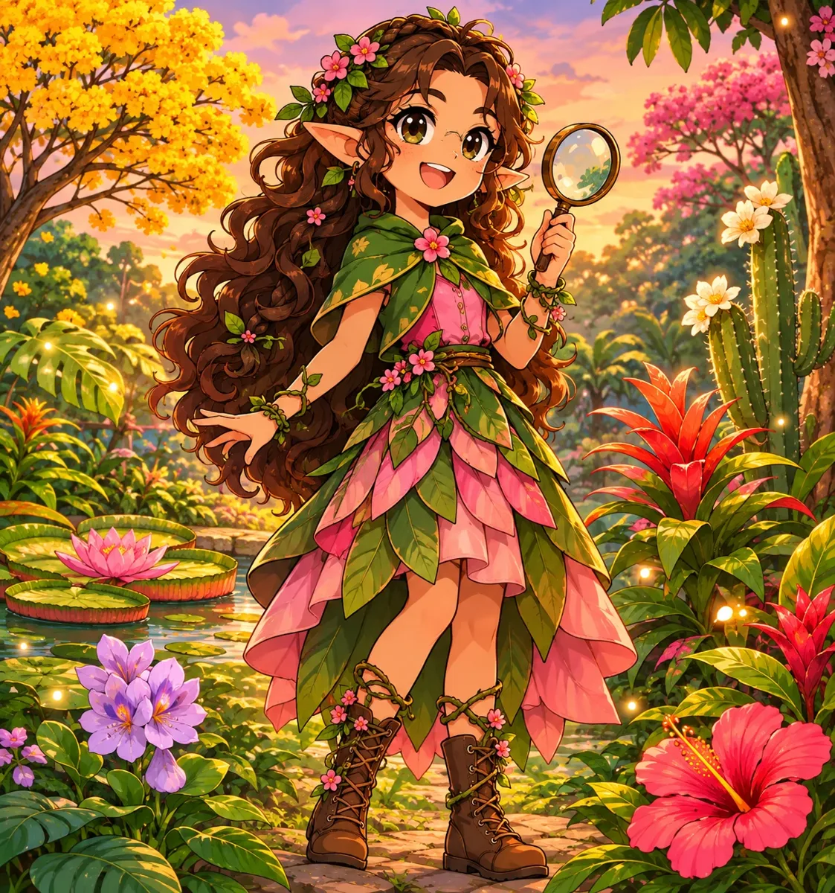

Dattflower
Especialista em flores ✨Olá! Eu sou a guardiã do Dattflower 🌸
Eu adoro flores! O Dattflower olha a foto que você escolher e tenta descobrir qual é a flor.
Depois, eu conto o nome, a confiança da descoberta, o significado, uma descrição, uma curiosidade e onde essa flor vive. 🌿

Se a foto não estiver clara o bastante, eu vou pedir outra.
Mostre uma flor para mim!
Você pode tirar uma foto agora ou escolher uma foto que já está no aparelho.
Escolha uma foto
Para uma descoberta melhor, deixe a flor bem visível. 🌿
🌷 Antes de começar
A elfa está procurando...
Estou olhando a foto com bastante atenção. ✨
Flor
Confiança: 0%💗 Significado
Não informado
🌿 Descrição
Não informado
✨ Curiosidade
Não informado
🗺️ Onde vive
Não informado
Histórico de flores
Aqui ficam as flores que você já descobriu neste aparelho.
Minhas flores favoritas
Toque em “Favoritar descoberta” no resultado para guardar uma flor aqui.
Flores de cada bioma
Escolha um bioma para ver as flores que vivem lá. As que você já descobriu pela foto ficam coloridas! 🌈
🌷 Outras flores que você descobriu aqui
Onde vivem as flores que você descobriu
Cada flor descoberta aparece no bioma certo do mapa. Toque em um bioma para ver as flores de lá.